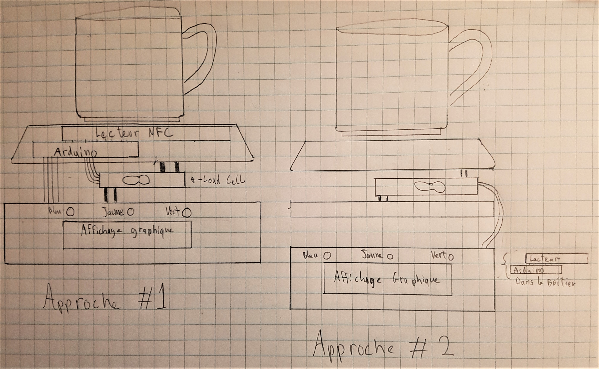
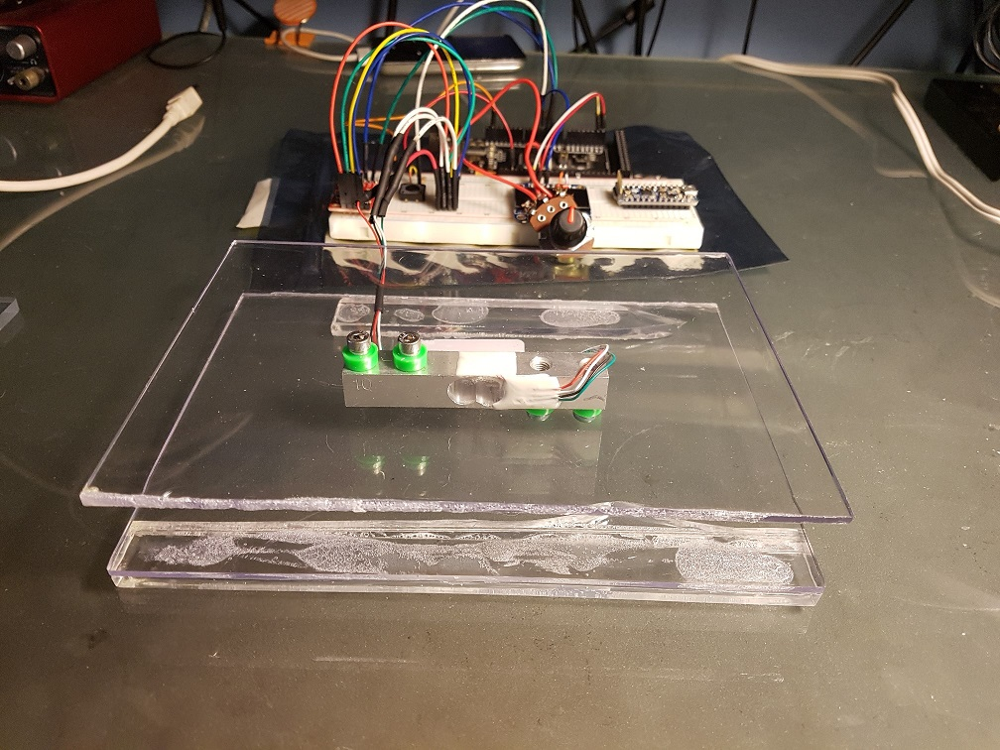
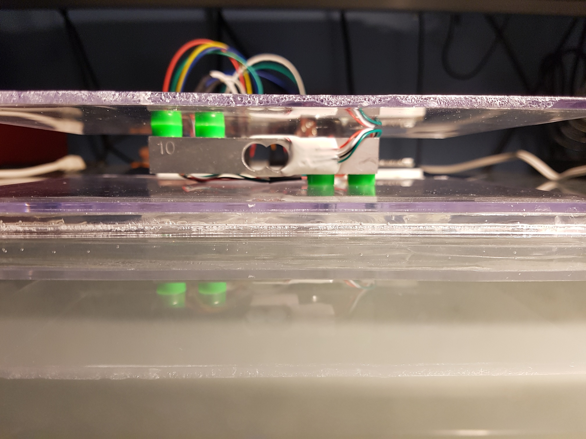
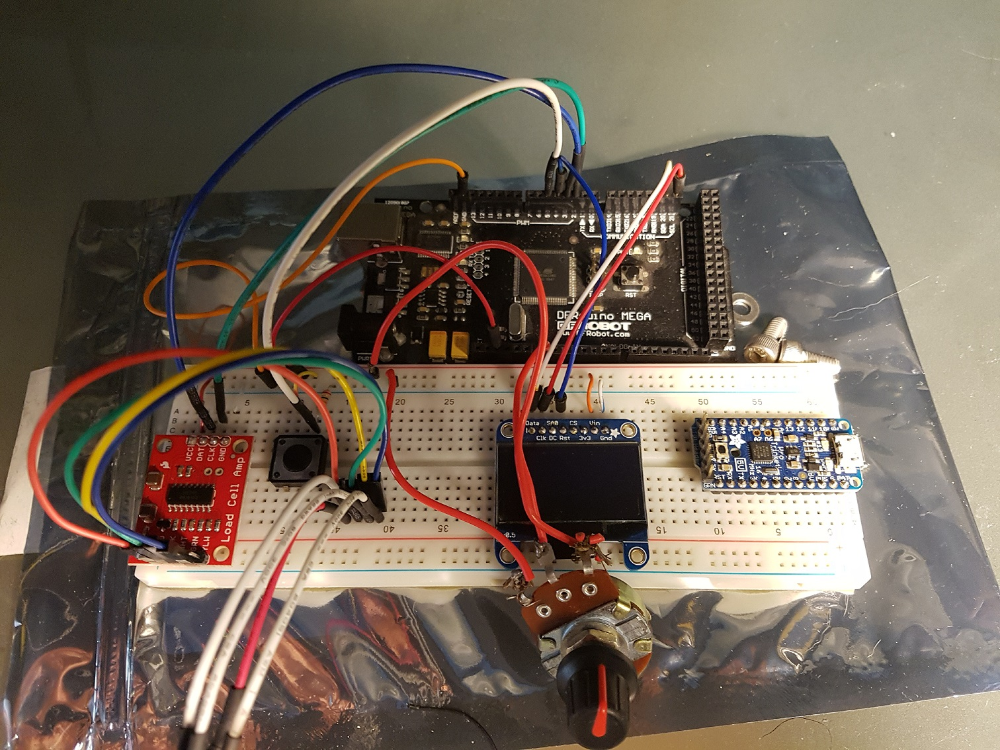
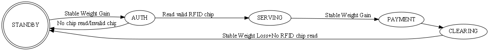

Réalisé par Carlos Sanchez sous la supervision de Sébastien Roy
Présentation générale du projet
Dans le cadre du cours IFT3150 - Projet d'informatique, je réaliserai un système de cafétière qui permettra un paiement automatique au millilitre à l'aide d'une puce électronique. La mesure du volume se ferait à l'aide d'une balance et les informations transactionnelles seront encryptés dans la puce. Cette idée m'a été proposée par Sébastien Roy qui assurera la supervision du projet. Elle a été pensée dans le but de possiblement remplacer le système de "paiement d'honeur" à la boite à 50 sous du café étudiant de math-info.
Deux approches sont à considérer pour ce projet. La première serait d'avoir un seul module qui fait la lecture/écriture de la puce en plus de la mesure du volume. Cette implémentation permettrait de coller la puce à une tasse et la transaction se ferait en une étape. La seconde consisterait à avoir deux modules: un pour mesurer le volume et le second pour lire la puce et faire la transaction. Cette approche ne limiterait pas l'utilisateur à une seule tasse si jamais il l'oublie.
Afin que l'utilisateur puisse ajouter des fonds à sa puce, il devra passer à la caisse du café étudiant où il paiera aux employés le montant qu'il désire mettre dans sa puce. Ensuite les employés pourront recharger la puce avec le bon montant à l'aide d'un module "maitre" dédié à cet usage.
Le projet sera implémenté sur la plateforme de prototypage Arduino. C'est une approche idéale car elle est peu coûteuse et accèssible grâce aux ressources disponibles en ligne pour travailler avec les capteurs necéssaires.

Contraintes matérielles
Comme nous pouvons le constater sur le schéma, la principale contrainte que nous avons est que nous devons absolument rendre le module étanche aux liquides. Puisque nous manipulons le café directement sur le boîtier, nous devons être en mesure de protéger le matériel électronique et trouver un moyen de rediriger le liquide coulé dans un récipient prévu à cet effet.
En deuxième lieu, nous devons être en mesure d'utiliser les cafétières thermiques du café étudiant. Notre module doit donc être assez petit pour s'insérer dans la base existante sans avoir à la modifier.
Finalement, les informations sur la puce doivent être encryptées afin que l'on ne puisse pas recopier à l'infini une puce contenant des fonds pour éviter de payer.
Cas d'utilisation
Pour le premier type d'implémentation, un cas d'utilisation typique se déroulerait ainsi:
Le module allume une LED d'état de couleur BLEUE et l'affichage numérique indique que la machine est prête à être utilisée
L'utilisateur dépose sa tasse sur le module, l'affichage numérique indique que le module se prépare et la LED de couleur JAUNE s'allume:
Le module lit les informations sur la puce.
Le module calibre la balance (on met le poid à 0 avec la tasse vide).
Après la lecture et la calibration, la LED d'état VERTE s'allume et l'affichage indique de faire couler le café
Lorsque l'utilisateur arrête de faire couler:
Le module détecte la stabilité du poids, indiquant la fin du remplissage.
La LED d'état JAUNE s'allume indiquant d'attendre.
Le module soustrait le montant de la puce et la met à jour.
Les LED d'état BLEU et VERT clignotent en alternance indiquant la fin de la transaction.
L'usager reprend sa tasse et on retourne à l'étape 1.
Pour le second type d'implémentation, un cas d'utilisation typique se déroulerait ainsi:
Le module allume une LED d'état de couleur BLEUE et l'affichage numérique indique que la machine est prête à être utilisée
L'utilisateur dépose sa tasse sur le module, l'affichage numérique indique de déposer la puce au lecteur:
Le module lit les informations sur la puce.
Le module calibre la balance (on met le poid à 0 avec la tasse vide).
Après la lecture et la calibration, la LED d'état VERTE s'allume et l'affichage indique de faire couler le café.
Lorsque l'utilisateur arrête de faire couler:
Le module détecte la stabilité du poids, indiquant la fin du remplissage.
La LED d'état JAUNE s'allume indiquant d'attendre.
Le module soustrait le montant de la puce et la met à jour.
Les LED d'état BLEU et VERT clignotent en alternance indiquant la fin de la transaction.
L'usager reprend sa tasse et la puce puis on retourne à l'étape 1.
Dans les deux cas, l'usager peut avoir un solde négatif suite à une transaction. Cependant, s'il a des fonds négatifs au moment de la lecture de la puce, les 3 LED clignoteront et l'affichage indiquera à l'usager de passer à la caisse pour ajouter des fonds.
Rapport hebdomadaire
Semaine 1 - 8 au 12 mai
Sébastien et moi avons planifié plus en détail la structure du projet. Nous avons discuté des possibilités d'implémentation au niveau matériel et des plateformes de prototypage à utiliser (Arduino vs Raspberry Pi ou les deux). J'ai aussi monté ce site pour la présentation du projet.
J'ai commencé à faire des tests avec le senseur et l'affichage graphique. Les librairies pour la balance et l'écran ont rendu la tâche plus fluide que je m'attendais, tout a été très simple à coder. Cependant, le senseur de poids est très fragile, il a arrêté de fonctionner un soir et fonctionnait parfaitement le lendemain.... Voici quelques images du projet à ce jour:



Semaines 2 et 3 - 15 au 26 mai
Le progrès a été plutôt lent ces deux dernières semaines dû au matériel inconsistent et d'un examen intra. J'ai implémenté un système de stabilité de poids afin de détecter un dépôt de tasse sur la balance. Il est basé sur la variation du poids (deltaPoids/deltaTemps). Passé un seuil de variation, on déclenche le système attendant une stabilité (variation de poids nulle) pendant X secondes dépendament du mode du système. Une fois la stabilité détectée, le système fait une remise à zéro automatique.
J'ai aussi commencé l'implémentation de la boucle d'utilisation Standby → Dépôt de tasse → Authentification NFC → Service → Paiement → Réinitialisation → Standby. Pour le moment le système est fonctionnel mais je dois réorganiser le code de manière plus claire. J'ai aussi installé une LED verte et rouge pour signifier l'état du système mais les motifs de clignotage et la signification des lumières selon l'état du système est à retravailler pour que ce soit plus clair pour l'utilisateur. Je prévois l'utilisation de LED supplémentaires afin de mieux communiquer l'état du système et d'éviter toute ambiguïtée.
J'ai procédé à l'adaptation du code source .ino pour passer en C++ afin d'utiliser un éditeur plus pratique que Arduino. J'utilise désormais Atom avec le plugin PlatformIO, me permettant de programmer le microcontrolleur en C++ et de profiter des fonctions d'éditeurs plus pratques comme le auto complete de fonctions et de variables. J'ai aussi restructuré mon code de manière plus claire en créant une classe Scale contenant les fonctions qui concernent uniquement la balance. Suite aux commentaires de Sébastien, j'ai aussi modifié cette classe pour la dissocier le plus possible de la logique de la boucle d'utilisation et du status général du système.
Présentement, la logique générale ressemblera à ceci:

Il sera mis à jour au courant de la session, lorsque le lecteur de carte sera intégré dans la boucle d'utilisation.
J'ai aussi commencé à travailler avec le lecteur NFC. Je dispose présentement de deux types de cartes, deux MiFare classic de 1kB de mémoire et un MiFare Ultralight de 64bytes. La structure de mémoire des deux types est bien différente et j'aurai beaucoup de documentation à lire par rapport au fonctionnement des cartes MiFare.
Semaines 6 et 7 - 12 juin au 23 juin
Les progrès ont été lents (dû à la préparation d'examens) mais significative. J'arrive à lire et écrire sur les cartes à puce "jettables" de type MiFare Ultralight. Ces cartes ont une mémoire dottée de 16 pages de 4bytes chacune, pour un total de 64bytes lisibles. Les pages 4 à 15 peuvent être utilisées pour l'écriture et pour le moment, j'écris les informations transactionelles sur les pages 12 à 15. La page 12 sert à stocker le solde de la carte, les pages 13 et 14 servent à stocker le UID de la carte pour des fins d'authentifications, et la 15ème page est libre pour l'instant. La librairie du lecteur NFC supportait partiellement les cartes Ultralight et j'ai dû la modifier afin de répondre aux besoins du projet. Elle était déja bien documentée dans les commentaires alors les modifications n'ont pas été trop difficiles à implémenter.
Dans les prochains jours, je commencerai à lire sur la cryptographie afin de planifier un système d'encryption des données pour protéger le système contre les cartes clônées.
Semaines 8 et 9 - 26 juin au 7 juillet
La partie cryptographie est entamée. J'utilise la librairie ChaCha pour Arduino qui est une variante de la crypto Salsa20. Cet algo très simple mais robuste prend une clé de cyptage, un vecteur d'initialisation et un "block counter" qui est un tableau servant à gerer les blocs de données générées par l'algo. L'algorithme utilise ces données pour générer des matrices de bytes sur lequelles il applique des additions, des rotations de bits et des ou exclusifs entre les données du tableaux pour mélanger les données. On peut répéter ces opérations un nombre arbitraire de fois pour augmenter sa fiabilité.
Le projet est à un stade ou sa fonction principale est implémentée de manière assez fiable. Je dois essayer de le "briser" pour trouver des failles ou des problèmes qui m'auraient échappé. Je dois aussi implémenter un mode de recharge de carte et trouver une manière de rendre la calibration de la balance accessible. De plus, suite à une discussion avec Sébastien, nous allons probablement opter pour un des LEDs RGB configurées en anneau (comme ceux-ci ou bien ceux-là) que nous placerions dans la balance. Cette option permettrait de mieux signaler l'état du système à l'usager et d'afficher des motifs de lumières variés.
Semaines 10 et 11 - 10 juin au 21 juillet
Les deux dernières semaines j'ai crée un programme permettant la recharge de cartes usagers. J'ai une carte "administrateur" contenant des données pour autoriser un ajout de 10$ sur une carte et lorsqu'on la lit, le système attend la lecture d'une carte usager pour y ajouter les fonds. Pour le moment je n'ai qu'une seule carte NFC supplémentaire, pour tester le système de recharge, mais il semble prometteur. Lorsque je m'en procurerai d'autre je pourrai continuer à effectuer des test.
Semaines 12 et 13 - 24 juillet au 4 août
Les deux dernières semaines Sébastien et moi avons procédé à la commande des pièces manquantes et débuté le prototypage de la base imprimée 3D. Avec un début de base en main, j'ai pu commencer le montage du matériel électronique. J'ai fait quelques longues scéances de soudure et de montage pour créer un "shield" pour le Arduino permettant de faire toutes les connections sur un seul module. J'ai aussi peaufiné le code et implémenté des fonctions d'éclairage pour la nouvelle barre de LED. Dans les prochaines semaines, je continuerai à retravailler le code.
Fin août
J'ai paufiné le code et rédigé le rapport final. Il se trouve ici. J'ai aussi ajouté un script permettant de créer/lire des cartes usagers et cartes administrateurs.